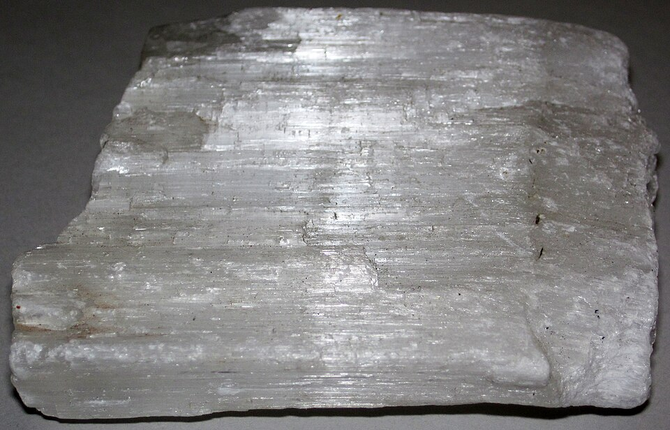
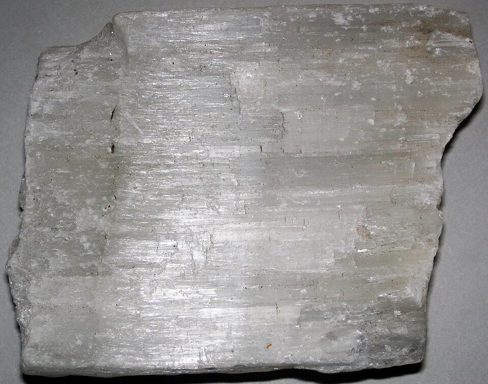

Shígāo · Gypsum石膏
Gypsum Fibrosum · Heat-clearing herbs: herbs that drain fireGypsum Fibrosum · 清热药·清热泻火药

_3.jpg){kind=link}

_1.jpg){kind=link}
- Flavour · nature性味
- acrid, sweet; very cold辛、甘，大寒
- Channels归经
- Lung, Stomach肺、胃经
- Direction升降浮沉
- Extremely cold in nature, it clears excess heat from the lung and stomach and acts primarily by clearing and descending; the raw mineral drains fire and relieves thirst, while the calcined form absorbs moisture and supports wound healing性大寒，清泄肺胃实热，作用趋于清降；生用偏于清热泻火、除烦止渴，煅用偏于收湿、生肌、敛疮
- Toxicity毒性
- Non-toxic无毒
- Dose (pharmacopoeia)用量（药典）
- 15–60 g (ceiling 60 g)（上限 60 克）
Decocted, with raw gypsum crushed and decocted first. Calcined gypsum is finely powdered for appropriate external application. Raw and calcined gypsum have different uses; external application instructions for calcined gypsum should not be applied to oral use.煎服，生石膏宜打碎先煎；煅石膏研细末，外用适量。生石膏与煅石膏用途不同，不可将外用煅石膏的用法直接套用于内服。 - Pregnancy孕期
- Caution in pregnancy孕妇慎用 Health Canada's TCMI monograph explicitly requires products to state that they must not be used during pregnancy or breastfeeding. Pregnancy should therefore be treated as a precaution, and self-administration or use of products containing gypsum should be avoided. The usual precautions in the Chinese Pharmacopoeia do not replace Health Canada's pregnancy and breastfeeding warning.《中国药典》2020 年版石膏项下未设「注意」，未列孕期条；加拿大卫生部TCMI专论要求全部收录产品标注孕期及哺乳期勿用，因此孕期按慎用处理，避免自行内服或使用含石膏的产品。中国药典石膏项下的常规使用注意不能替代加拿大卫生部对孕期、哺乳期的产品警示。
- Health Canada加拿大卫生部
- Health Canada: monograph加拿大卫生部：有专论 Health Canada's Natural Health Products Ingredients Database Traditional Chinese Medicine Ingredients monograph, dated May 29, 2026, includes Gypsum fibrosum (Shi Gao, Gypsum Fibrosum) in Table 1, General Medicinal Ingredients. This is a Table 1 listing, not a Table 3 or Table 4 restricted category. The monograph requires product labelling to state: do not use during pregnancy or breastfeeding; consult a healthcare professional before use if taking prescription medicines or if suffering from a serious illness or acute infection; discontinue use and seek medical attention if symptoms persist or worsen. Inclusion in the monograph does not mean that every gypsum-containing product is authorized for sale in Canada; the individual product's NPN and licence status must still be checked.加拿大卫生部NHPID传统中药成分专论（Traditional Chinese Medicine Ingredients，TCMI，2026年5月29日）收录Gypsum fibrosum（Shi Gao，Gypsum Fibrosum），列于Table 1：General Medicinal Ingredients（一般药用成分）。该条目属于表1收录，不是表3或表4的限制类别。专论要求产品标注：孕期或哺乳期勿用；正在服用处方药、有严重疾病或急性感染者，使用前咨询医务人员；症状持续或加重时停止使用并就医。该专论收录不等于所有含石膏产品均已获得加拿大上市许可，具体产品仍须核对其NPN及产品许可状态。
- Conservation资源与保护
- Gypsum is a natural mineral medicine. The permitted sources for this profile provide no evidence that it is listed under endangered-species protection or international wildlife trade restrictions. Medicinal supplies generally come from mineral extraction; environmental protection and mining permits for specific sources should be verified under applicable local mineral-resource regulations.石膏为天然矿物药，本题可用来源未提供其列入濒危物种保护名录或国际贸易限制名录的证据。常规药用资源来自矿产开采；具体矿源的环境保护与开采许可应依当地矿产资源管理规定核实。
- Source来源
- English version coming天然含水硫酸钙矿物（Gypsum）。硫酸钙矿物的含水结晶体，主要成分为含水硫酸钙（CaSO₄·2H₂O）
Traditional actions and indications功效与主治（传统）
🏛 Traditional statements, not efficacy claims; the modern evidence is graded further down.以下为传统说法，不是疗效主张；现代证据见下文分级。
- Clears heat and drains fire清热泻火
- Relieves irritability and thirst除烦止渴
Raw gypsum is used for high fever, irritability, intense thirst, sweating and a forceful pulse in externally contracted febrile disease with excess heat in the qi level; cough and wheezing due to lung heat; and headache, toothache and oral sores caused by excessive stomach fire. Calcined gypsum is used for non-healing ulcers, itchy eczema, burns and external bleeding because of its moisture-absorbing, tissue-supporting, astringent and haemostatic properties.生石膏：用于外感热病、气分实热所致的高热、烦渴、汗出、脉洪大；肺热喘咳；胃火亢盛所致的头痛、牙痛、口舌生疮。煅石膏：用于疮疡溃后不敛、湿疹瘙痒、水火烫伤及外伤出血，取其收湿、生肌、敛疮、止血之功。
How to recognise it怎么认
Growing植株 Shi Gao is a mineral medicine, not a botanical drug. Natural gypsum consists mainly of hydrated calcium sulfate and occurs as massive, fibrous or granular aggregates, usually white to greyish-white and sometimes pale yellowish or grey. It is relatively soft, belongs to the monoclinic crystal system and may display a silky lustre in fibrous aggregates. Key identification features are its pale mineral appearance, fibrous structure and relatively low hardness.石膏不是植物药，而是天然矿物药。原矿主要为含水硫酸钙，常呈块状、纤维状或粒状集合体，颜色以白色、灰白色为主，有时带浅黄色或浅灰色。质地较软，硬度较低，晶体可呈单斜晶系形态，纤维状集合体常具有丝绢光泽。识别重点是白色矿物外观、纤维状结构及相对较软的质地。
Decoction pieces饮片 Raw gypsum occurs as irregular mineral fragments of varying sizes, white to greyish-white, often showing longitudinal fibrous markings and a silky lustre. It is relatively firm but brittle, with a white or off-white fracture surface that commonly displays fibrous or layered structures. It has almost no smell and a bland taste. Calcined gypsum is generally a fine white or off-white powder, visibly different from the raw mineral fragments.生石膏饮片通常呈不规则块状，大小不一，白色或灰白色，表面可见纵向纤维状纹理及丝绢样光泽；质地较硬但性脆，断面洁白或类白色，常呈纤维状、层状结构，手掰可见断口。气微，味淡。煅石膏通常为白色或类白色粉末，质地细腻，外观与生石膏块状饮片明显不同。
No photo of medicinal raw or calcined gypsum; the pictures are mineral specimens.缺药用生石膏、煅石膏饮片照；现有为矿物标本。
Processing炮制
- Raw Shi Gao生石膏：: Uncalcined gypsum, primarily used to clear heat, drain fire, relieve irritability and quench thirst; commonly used for excess heat at the qi level.未经煅烧，主要用于清热泻火、除烦止渴，是治疗气分实热证的常用药。
- Calcined Shi Gao煅石膏：: Gypsum calcined and finely powdered for external use, primarily to absorb moisture, support tissue repair, astringe wounds and stop bleeding; used for eczema, ulcers and burns.经煅烧后研细，外用偏于收湿、生肌、敛疮、止血，适用于湿疹、溃疡及烫伤等。
Cautions and incompatibilities使用注意与配伍禁忌
Gypsum is extremely cold in nature and is contraindicated in people with spleen and stomach deficiency-cold or internal heat due to yin deficiency. Confirm that the presentation is an excess-heat pattern rather than applying it indiscriminately to deficiency-cold conditions. Raw gypsum should be crushed and decocted first, at the pharmacopoeial oral dose of 15–60 g; evidence for doses above this range has not been verified. Health Canada's TCMI monograph requires products to state that they must not be used during pregnancy or breastfeeding; people taking prescription medicines or with serious illnesses or acute infections should consult a healthcare professional before use; persistent or worsening symptoms require discontinuation and medical attention.石膏性大寒，脾胃虚寒者及阴虚内热者忌用。临床使用应辨明是否属于实热证，避免将外感实热、高热烦渴的适用情形扩大到虚寒证。生石膏内服应按药典规定煎服，打碎先煎，用量为15～60g；超出药典用量的依据待核。加拿大卫生部TCMI专论要求产品标注孕期或哺乳期勿用；服用处方药、有严重疾病或急性感染者，使用前咨询医务人员；症状持续或加重时停止使用并就医。
Interactions with medicines与西药的相互作用
The permitted sources for this profile provide no clearly documented human evidence of interactions between oral gypsum and specific Western medicines. PMID 26087564 investigated plasma pharmacokinetics and urinary excretion before and after combining Ephedrae Herba with gypsum; it concerns traditional herbal compatibility in animal or laboratory research, not interactions between gypsum and Western medicines. It cannot establish Western drug interactions. Health Canada advises people taking prescription medicines to consult a healthcare professional before use.在本档限定的可用来源中，未发现石膏饮片与特定西药之间有明确、可引用的人体药物相互作用证据。PMID 26087564研究的是麻黄与石膏配伍前后的血浆药代动力学及尿液排泄特征，属于动物或体外研究，讨论的是中药配伍，不是石膏与西药的相互作用，不能据此推导西药相互作用。加拿大卫生部要求服用处方药者使用前咨询医务人员。
Modern research, graded现代研究（分级）
- E2 A human randomized controlled trial investigated Compound Zhuye Shigao Granule (CZSG) in cancer patients with acute radiation-induced esophagitis. The abstract reports a lower incidence and grade of esophagitis, delayed onset and shorter duration with the compound formula. The research examined a multi-herb granule containing gypsum, not gypsum as a single crude drug; its findings cannot be attributed to gypsum alone or directly extrapolated as clinical evidence for single-herb gypsum treatment of radiation-induced esophagitis.一项人体随机对照试验研究了复方竹叶石膏颗粒（Compound Zhuye Shigao Granule，CZSG）在癌症患者急性放射性食管炎中的应用。摘要报告该复方可降低急性放射性食管炎的发生率与分级、延迟发生时间并缩短持续时间。研究对象是包含石膏的复方颗粒，而非单味石膏饮片；试验结果不能单独归因于石膏，也不能直接外推为单味石膏治疗放射性食管炎的临床证据。
- E4 An animal and laboratory pharmacokinetic study compared plasma pharmacokinetics and urinary excretion before and after combining Ephedrae Herba with gypsum. Its conclusion concerned the rationale for compatibility between the two traditional medicines. The study examined their combined administration and pharmacokinetic changes, not the clinical efficacy of gypsum alone or interactions with Western medicines.一项动物及体外药代研究比较了麻黄与石膏合用前后的血浆药代动力学及尿液排泄特征，研究结论涉及麻黄与石膏的中药配伍依据。该研究对象是两味药的联合使用及其药代变化，不能作为石膏单药临床疗效或与西药相互作用的证据。
- E4 A 2026 mouse study used an LPS-induced acute pneumonia model to investigate the in vivo effects of Zhuye Shigao Decoction and examined related changes through lung tissue metabolomics. The research involved mice and a multi-component traditional formula, and does not establish clinical efficacy of single-herb gypsum for human pneumonia.2026年一项小鼠研究以LPS诱导的急性肺炎模型观察竹叶石膏汤的体内作用，并通过肺组织代谢组学分析相关变化。研究对象是小鼠、复方竹叶石膏汤及其多成分作用，不能直接证明单味石膏饮片对人体肺炎的临床疗效。
In the classics古籍原文
「石膏味辛微寒。主治中風寒熱，心下逆氣驚喘，口乾舌焦不得息，腹中堅痛，除邪鬼，產乳，金創。生山谷。」——神农本草经
Shennong Bencao Jing (Divine Farmer's Materia Medica)
The Shennong Bencao Jing describes gypsum as pungent and slightly cold, traditionally used for febrile disorders, rebellious qi with frightening wheezing, severe oral dryness and abdominal hardness and pain. These are historical disease descriptions. Later materia medica and traditional Chinese medicine theory further established its role in clearing heat and draining fire, particularly excess heat in the lung and stomach.《神农本草经》记载石膏味辛微寒，主治中风寒热、心下逆气惊喘、口干舌焦等。原文以古代病证语言描述其清热、除烦、止渴等传统应用。后世本草及中医理论逐渐明确其清热泻火的功效定位，尤其强调其清肺胃实热的特点。
Where it is used: the web串联：它在哪些方里、连到哪里
Classical formulas (Shanghan, Jingui)经方（伤寒、金匮）
Later formulas (Song to Qing)时方（宋元明清）
| Formula方 | Role角色 | Dose: original / today剂量：原书／今用 | Partners in the formula同方配伍 |
|---|---|---|---|
| Bupleurum and Kudzu Muscle-Releasing Decoction柴葛解肌汤 | Minister臣 | original text: see the Chinese original一钱（原文紧接在「加姜枣石膏」之后，是否专指石膏用量、或泛指煎服法，存疑） | Sheng Jiang (fresh ginger)生姜 · Da Zao (jujube)大枣 · Cháihú (Bupleurum root)柴胡 · Gégēn (Kudzu root)葛根 · Qiang Huo (notopterygium)羌活 · Bai Zhi (angelica dahurica root)白芷 · Huángqín (Baikal skullcap root)黄芩 · Báisháo (White peony root)白芍 · Jie Geng (platycodon root)桔梗 · Gāncǎo (Licorice root)甘草 |
| Saposhnikovia Sage-Inspired Powder防风通圣散 | Minister臣 | original text: see the Chinese original一两 | Fángfēng (Saposhnikovia root)防风 · Máhuáng (Ephedra herb)麻黄 · Jing Jie (schizonepeta)荆芥 · Bòhe (Chinese mint)薄荷 · Dàhuáng (Rhubarb root and rhizome)大黄 · Mang Xiao (mirabilite)芒硝 · Huángqín (Baikal skullcap root)黄芩 · Lian Qiao (forsythia fruit)连翘 · Zhi Zi (gardenia fruit)栀子 · Hua Shi (talc)滑石 · Jie Geng (platycodon root)桔梗 · Chuan Xiong (Sichuan lovage rhizome)川芎 · Dāngguī (Chinese Angelica Root)当归 · Báisháo (White peony root)白芍 · Bai Zhu (white atractylodes)白术 · Gāncǎo (Licorice root)甘草 · Sheng Jiang (fresh ginger)生姜 · Cong Bai (scallion white)葱白 |
| Clear Dryness and Rescue the Lungs Decoction清燥救肺汤 | Minister臣 | original text: see the Chinese original二钱五分 | Sang Ye (mulberry leaf)桑叶 · Mai Dong (ophiopogon tuber)麦冬 · Gāncǎo (Licorice root)甘草 · Rénshēn (Ginseng (Asian))人参 · Kǔ Xìng Rén (Bitter Apricot Seed)苦杏仁 · Hei Zhi Ma (black sesame)黑芝麻 · E Jiao (ass-hide gelatin)阿胶 · Pi Pa Ye (loquat leaf)枇杷叶 |
Folk and single-herb remedies偏方、验方、单方
| Formula方 | Use用法 | Self-use能否自用 |
|---|---|---|
| Gypsum powder steamed with pig liver (night blindness)石膏末蒸猪肝（雀目夜昏） | Food食疗 | See a doctor first先看医生再说 |
Patterns reached through these formulas经由这些方连到的证
- Lingering heat with damage to qi and fluids余热未清、气津两伤 ← White Tiger Decoction plus Ginseng白虎加人参汤, Bamboo Leaf and Gypsum Decoction竹叶石膏汤Points穴位 ST36 ZúsānlǐST36 足三里 · PC6 NèiguānPC6 内关 · SP6 SānyīnjiāoSP6 三阴交 · KI6 ZhàohǎiKI6 照海 · LU10 YújìLU10 鱼际Self-massage自我按摩 Ten minutes before bed: a self-massage routine for restless nights睡前十分钟：给睡不着的夜晚一套按摩 · Bloated after meals: belly rubbing and a few common points吃完总是胀：摩腹与几个常用穴Qigong功法 Baduanjin (Eight Pieces of Brocade)八段锦 · Liuzijue (Six Healing Sounds)六字诀
- Yangming qi-level heat阳明气分热盛 ← White Tiger Decoction白虎汤
- Taiyang cold damage (wind-cold exterior excess)太阳伤寒（风寒表实） ← Major Blue-Green Dragon Decoction大青龙汤
- Heat congesting the lung (cough and wheeze)邪热壅肺（肺热喘咳） ← Ephedra, Apricot Kernel, Licorice, and Gypsum Decoction麻黄杏仁甘草石膏汤Points穴位 LU5 ChǐzéLU5 尺泽 · LU10 YújìLU10 鱼际 · BL13 FèishūBL13 肺俞 · GV14 DàzhuīGV14 大椎 · LI4 HégǔLI4 合谷Qigong功法 Liuzijue (Six Healing Sounds)六字诀
Exam notes (HER)考点（HER）
HER essentials: (1) Shi Gao is a heat-clearing herb that drains fire; (2) it is pungent and sweet, extremely cold, and enters the lung and stomach channels; (3) its principal actions are clearing heat, draining fire, relieving irritability and quenching thirst; (4) raw gypsum is used internally, whereas calcined gypsum is primarily used externally, with different functions after processing; (5) the oral dose of raw gypsum is 15–60 g, crushed and decocted first; (6) it is contraindicated in spleen and stomach deficiency-cold and internal heat due to yin deficiency; (7) it is commonly combined with Zhi Mu in Bai Hu Tang; (8) Health Canada's TCMI lists it in Table 1 as a general medicinal ingredient, and pregnancy and breastfeeding warnings are essential; (9) a human randomized trial of Compound Zhuye Shigao Granule does not establish the efficacy of single-herb gypsum.HER重点：①石膏属于清热药中的清热泻火药；②辛、甘、大寒，归肺、胃经；③核心功效为清热泻火、除烦止渴；④生石膏内服，煅石膏外用，二者炮制后功用不同；⑤生石膏15～60g，打碎先煎；⑥大寒，脾胃虚寒及阴虚内热者忌用；⑦与知母相须为用，常见于白虎汤；⑧加拿大卫生部TCMI将其列入Table 1一般药用成分，孕期及哺乳期产品警示必须掌握；⑨复方竹叶石膏颗粒的人体随机对照试验不能等同于单味石膏的人体疗效证据。
Sources依据
- Chinese Pharmacopoeia Commission. Pharmacopoeia of the People's Republic of China, 2020 edition, vol. I国家药典委员会《中华人民共和国药典》2020 年版一部
- Zhong Gansheng (ed.). Chinese Materia Medica (national TCM higher-education textbook series)钟赣生主编《中药学》（全国中医药行业高等教育规划教材）
- Health Canada, NHPID monograph: Traditional Chinese Medicine Ingredients (TCMI), May 29, 2026 ↗
- Wang et al. Effect of compound Zhuye Shigao Granule ( ) on acute radiation-induced esophagitis in cancer patients: A randomized controlled trial. Chin J Integr Med. 2017 ↗
- Huo et al. [Changes in plasma pharmacokinetics and urinary excretion characteristics before and after combined administration of Ephedrae Herba-Gypsum Fibrosum]. Zhongguo Zhong Yao Za Zhi. 2015 ↗
- Tang et al. Lung Tissue Metabolome Investigation Reveals the In Vivo Effects of Zhuye Shigao Decoction in an LPS-Induced Acute Pneumonia Model in Mice. Mediators Inflamm. 2026 ↗